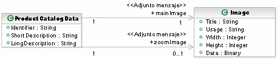
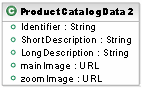

| Directriz: Archivo de datos adjuntos del mensaje |
 |
|
| Elementos relacionados |
|---|
IntroducciónAl diseñar Mensajes, a veces existen estructuras que vemos que de hecho se realizan como documentos u otros archivos compuestos y potencialmente grandes. Por ejemplo, la información sobre informes o productos se puede distribuir como archivos PDF o es posible que se adjunten imágenes que describen un producto o elemento. El Perfil Unified Modeling Language (UML) para servicios de software proporciona un <<Archivo de datos adjuntos del mensaje>> de estereotipo adicional que se puede adjuntar a propiedades en un modelo de mensaje que indica que el contenido especificado se ha adjuntado de alguna manera al modelo. Esto permite que el diseñador proporcione una especificación detallada de un aspecto muy importante del diseño del mensaje. En concreto, respecto al rendimiento y al uso del ancho de banda, transferir grandes archivos de datos adjuntos binarios puede ser un factor significativo. Archivos de datos adjuntos o enlacesEn una arquitectura de Internet, hay un enfoque para transferir una gran cantidad de información, la transferencia de un URL que permite al destinatario descargar el contenido mediante un protocolo más adecuado como FTP. Esto resulta también muy útil si los datos no cambian a menudo porque pueden situarse en una ubicación común para que la reciban todos los clientes; también es un mecanismo eficaz si el destinatario del mensaje puede elegir no descargar el contenido adicional. Esto tiene la ventaja de poner el requisito para la descarga del archivo de datos adjunto en el cliente. Esto puede suponer más una desventaja y un trabajo adicional para el cliente. Otro enfoque posible para los archivos adjuntos es la ubicación bien conocida. Por ejemplo, una parte de la documentación del servicio indica un URL base para los archivos de datos adjuntos y algún elemento del mensaje indica un identificador o nombre de archivo que se puede añadir al URL para obtener el recurso real que hay que descargar. Codificación del archivo de datos adjuntoEl estereotipo del archivo de datos adjunto del mensaje también tiene una propiedad que indica el formato de codificación del archivo de datos adjunto. Si bien el nombre es el mismo que el propietario de un mensaje, se recomienda que los valores utilizados para indicar la codificación de los archivos de datos adjuntos sean tipos MIME. Estos tipos ya los utiliza alguna infraestructura de Internet, como el protocolo HTTP para transferir datos binarios como imágenes para páginas web. Para obtener más información sobre tipos MIME, consulte el IETF RFC 2046 - Multipurpose Internet Mail Extensions (MIME) Part Two: Media Types. Un ejemploContemplemos un servicio que proporciona un catálogo de productos. Existen, por supuesto, operaciones para buscar elementos, ejecutar consultas y devolver información completa sobre los productos. Si examinamos un subconjunto del modelo de datos del producto, podemos ver que cada entrada de producto tiene asociada una imagen y posiblemente una imagen ampliada para verla más fácilmente. En el modelo siguiente, también podemos ver que las dos imágenes están marcadas como archivos de datos adjuntos a la estructura de datos del catálogo del producto. Lo que no podemos ver en el diagrama es que el valor para la propiedad de codificación es "image/jpeg" en ambos casos.  En cuanto al ejemplo que se muestra anteriormente, sería posible enviar un URL para cada imagen, que permite que el cliente decida si desea y cuando desea descargar la imagen real. El URL evidentemente, indicaría el protocolo y la ubicación de la operación de descarga. A continuación, se indica una versión de la estructura ProductCatalogData con las imágenes como enlaces.  |
© Copyright IBM Corp. 1987, 2006. Reservados todos los derechos. |